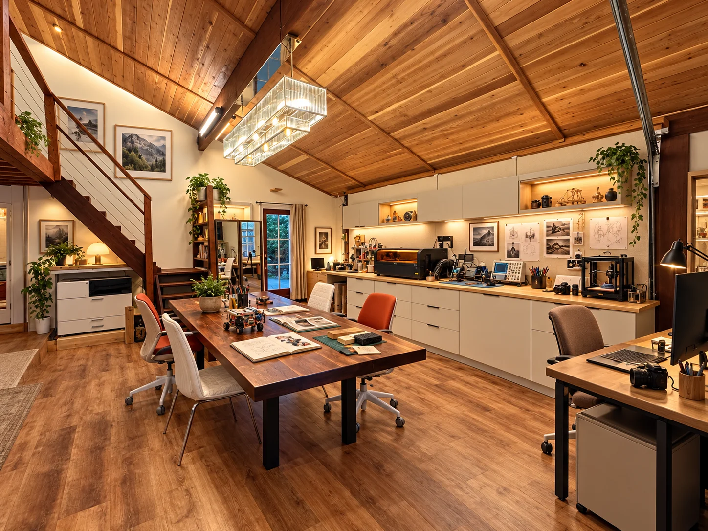
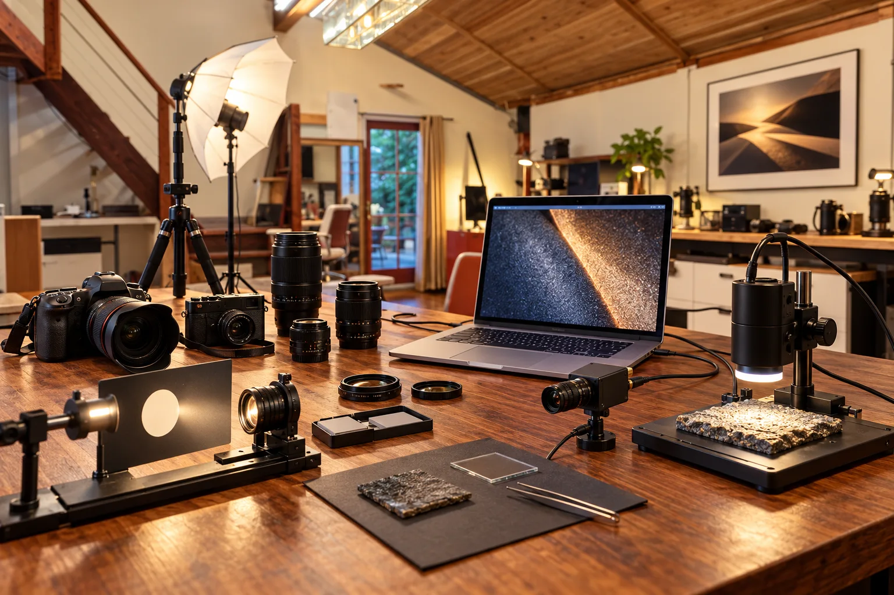
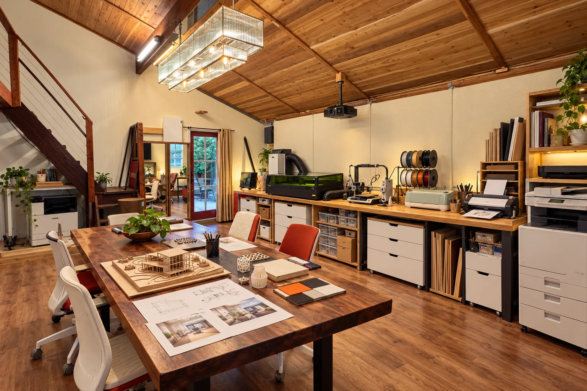
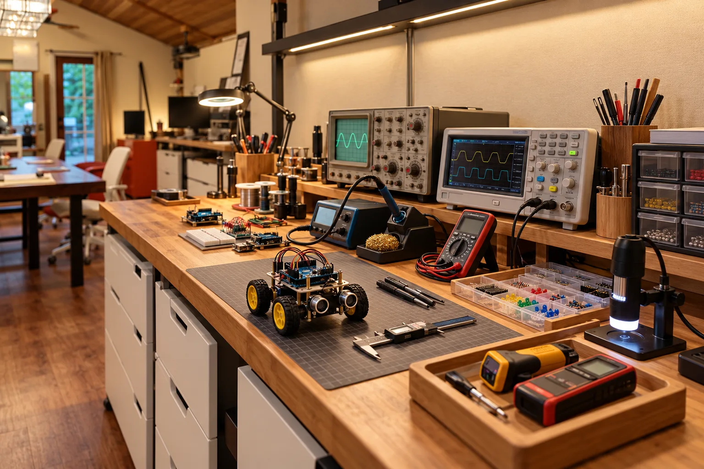
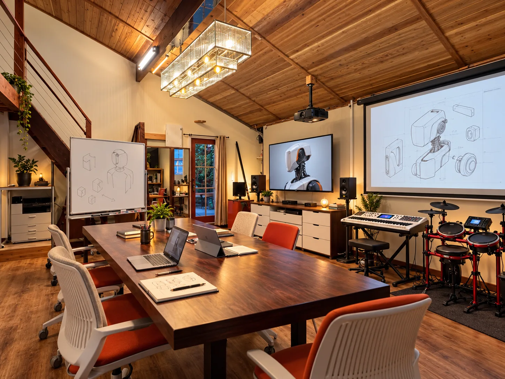

01
What should it notice?
Choose the signals that matter: an image, a spoken request, a change in the environment, or an explicit human action.

Ideas · Invention · Experience
A thinking space. A working studio.
For what might come next.
AI architectural concept · Based on the actual studio
Before there is a product, there is a possibility
Some ideas arrive as products.
Others begin as questions about how we see, live, work, or experience the world.
RĀSA Development Studio is a place to give those possibilities attention: to sketch, discuss, simulate, build, and discover what deserves to exist.
AI-first products are one direction. So are cameras, intelligent objects, physical interfaces, spaces, images, sound, and experiences. The common thread is the act of conceiving something—and developing it with care.
A thinking space for everything
The idea can be broad.
The next experiment should be specific.
Move between open exploration and focused development. A thought becomes a sketch. A sketch becomes a prototype. A prototype reveals what the original idea was missing.
The studio’s working rhythm
01 / AI as collaborator. AI as material.
Begin with a useful experience, then explore the intelligence and physical form it needs.

Two roles for AI
Use language and vision models to explore alternatives, challenge assumptions, investigate questions, assist with code, and interpret observations. Make their suggestions testable.
Develop experiences that can see, listen, interpret, and respond. Explore where language, perception, software, sensors, and physical interfaces become one useful system.
01
Choose the signals that matter: an image, a spoken request, a change in the environment, or an explicit human action.
02
Define the useful interpretation, the missing context, and the uncertainty the system should make visible.
03
Design the action, timing, and interface—and the choices that remain with the person using it.
What can someone do, understand, or experience better because intelligence is part of the design?
Illustrative development directions. Specific implementations begin with a project question and a testable prototype.
02 / Directions, not boundaries
Illustrative questions the studio could explore. Each begins with an experience worth investigating.
Could a small object offer timely assistance through a camera, a sensor, a voice, or a quiet physical response?
Could a different arrangement of light, lenses, sensors, and computation reveal something the usual camera misses?
Could a better shape, joint, interaction, or material turn an everyday frustration into a considered object?
Could a room, an image, a sound, or a sequence of interactions change how someone feels, focuses, or connects?
03 / The physical practice
Tools for getting beyond a compelling description and into something that can be held, observed, and tested.

Sketch in the morning.
Test a first version.
The studio combines digital design, fabrication, printing, and material supplies. Use the process that answers the question: a paper model, a fitted component, a printed drawing, or a working assembly.
04 / Signals, behavior & evidence
Connect sensing, code, circuits, and mechanics. Measure what the prototype actually does.

05 / Perception & expression
Technical investigation and creative judgment meet in the image, the interaction, and the experience.

Professional photographic resources support imaging and lighting studies. Projection, sound, and a shared table make it possible to experience a concept together, critique it, and change direction.
Keep the conversation close to the prototype: what does someone notice, understand, and feel?
06 / From possibility to evidence
Find the experience, need, or possibility worth pursuing. Make the assumptions explicit.
Sketch alternatives. Use AI, simulation, references, and conversation to widen the search.
Build the smallest meaningful test in software, hardware, material, or space.
Observe, measure, and experience the result. Decide what to change, develop, or set aside.
Sometimes the result is a product direction. Sometimes it is an image, a physical study, a better question, or a clear reason to stop. Each can be useful progress.

A place to return to an idea
A vaulted timber ceiling, an open central work area, equipment at the perimeter, and a loft above one end. A room that can shift from quiet work to an active experiment.
The ground-floor footprint is 22 × 24 feet, including the kitchenette and full bathroom. A separate entrance and private walkway, heating and cooling, and a snack refrigerator support time spent working here.
The physical studio is evolving. Its value begins with a place to think, experiment, and return to unfinished work.
The person behind the practice
Engineer. Inventor. Photographer.
A continuing student of possibility.
From the system architecture
to the human experience.
Manohar’s background spans electrical engineering, computer graphics, robotics, and computational photography, with a master’s degree from the Indian Institute of Science and a Ph.D. from MIT.
His experience includes camera-system architecture at Apple, work at Meta and Nokia, and a photographic practice with solo exhibitions in Boston. His public work connects optics, sensing, computation, and the experience those systems make possible.
RĀSA is a personal setting for extending that attention: conceiving ideas, investigating them, and giving promising directions a tangible form.
Explore the professional workAn independent personal initiative. References to education and employment describe background, not institutional affiliation or endorsement.
An idea is enough to begin
A possibility. A problem.
Something difficult to name yet.
Start a conversation about an idea, an experiment, or a potential collaboration. It can be technical, physical, visual, experiential—or still finding its form.
Connect with Mano ↗For now, conversations begin directly with Mano. The direction and scope of a potential collaboration can take shape from there.
Studio scenes are AI concepts based on photographs of the actual room. They illustrate possible arrangements, prototypes, lighting, and cabinetry, rather than completed improvements or exact equipment models. The robot is an illustrative prototype. Project questions are development possibilities, not completed client work.
Equipment descriptions are grounded in the owner’s inventory. The photographic collection is cataloged separately; not all of it is permanently installed here.
Biographical background is based on supplied information and Manohar’s professional website. This iteration explores the studio as a development practice; the Learning Studio version remains available separately.